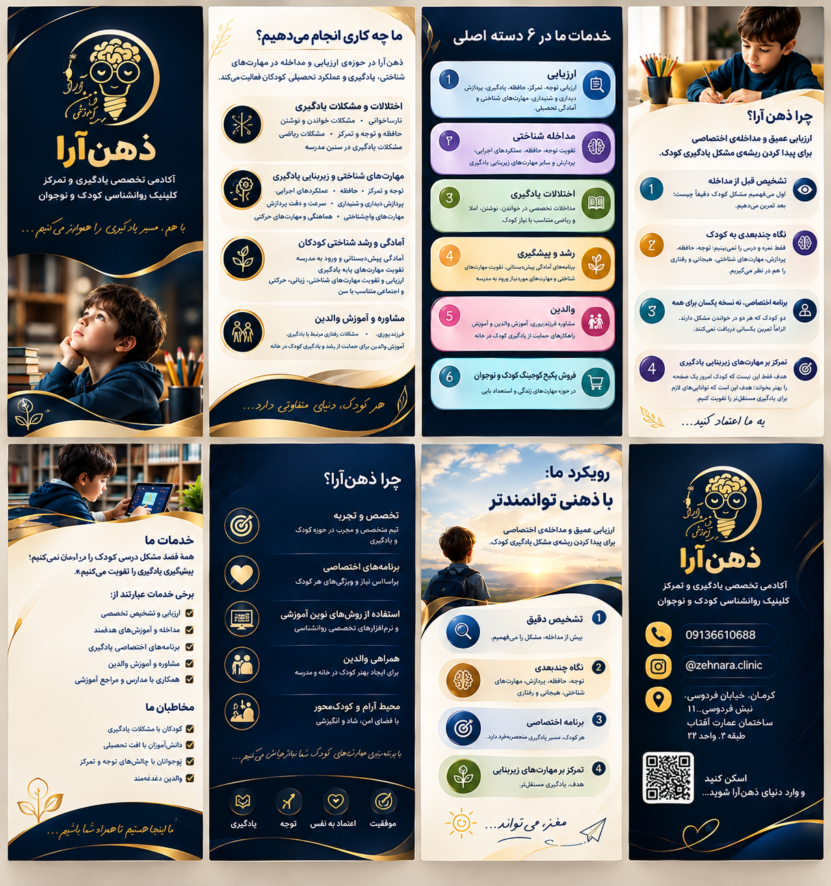

ارزیابی
ارزیابی توجه، تمرکز، حافظه، یادگیری، پردازش دیداری و شنیداری و آمادگی تحصیلی.

ارزیابی عمیق، مداخله اختصاصی و تقویت مهارتهای زیربنایی یادگیری.
ارزیابی توجه، تمرکز، حافظه، یادگیری، پردازش دیداری و شنیداری و آمادگی تحصیلی.
تقویت توجه، حافظه، عملکردهای اجرایی، پردازش و مهارتهای زیربنایی یادگیری.
مداخلات تخصصی در خواندن، نوشتن، املا و ریاضی متناسب با نیاز هر کودک.
آمادگی پیشدبستانی و تقویت مهارتهای موردنیاز ورود به مدرسه.
مشاوره فرزندپروری و آموزش راهکارهای حمایت از یادگیری کودک در خانه.
پکیجهای مهارتهای زندگی و استعدادیابی برای کودکان و نوجوانان.
ابتدا مشکل کودک را دقیق بررسی میکنیم و سپس مداخله متناسب طراحی میشود.
توجه، حافظه، پردازش، عملکردهای اجرایی و عوامل هیجانی و رفتاری در کنار عملکرد تحصیلی دیده میشوند.
دو کودک با یک مشکل ظاهری، لزوماً یک برنامه مداخله دریافت نمیکنند.
هدف، ساختن مهارتهایی است که به یادگیری مستقلتر و پایدارتر کمک میکنند.
شناخت دقیق نقاط قوت و نیازهای کودک پیش از مداخله.
انتخاب تمرینها بر اساس نتایج ارزیابی و نیاز واقعی کودک.
آموزش راهکارهای کاربردی برای حمایت از رشد و یادگیری در خانه.
از آمادگی ورود به مدرسه تا مهارتهای شناختی و تحصیلی سنین مدرسه.
تلفن: 09136610688
اینستاگرام: @zehnara.clinic
آدرس: کرمان، خیابان فردوسی، نبش فردوسی ۱۱، ساختمان عمارت آفتاب، طبقه ۳، واحد ۳۳